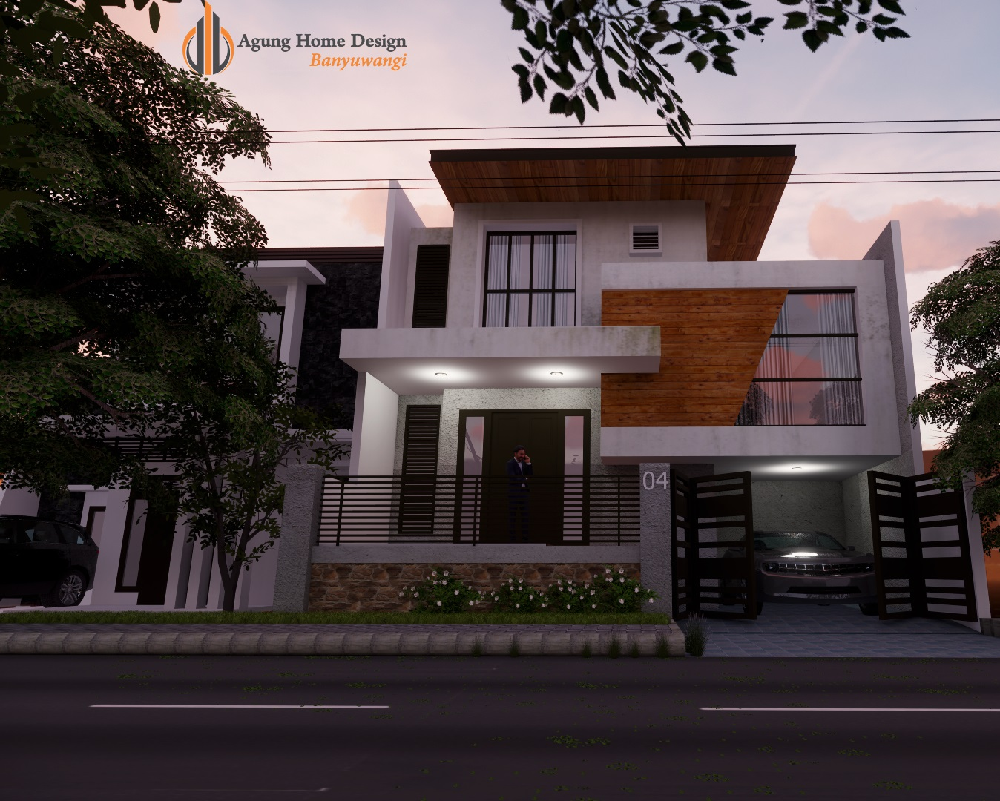
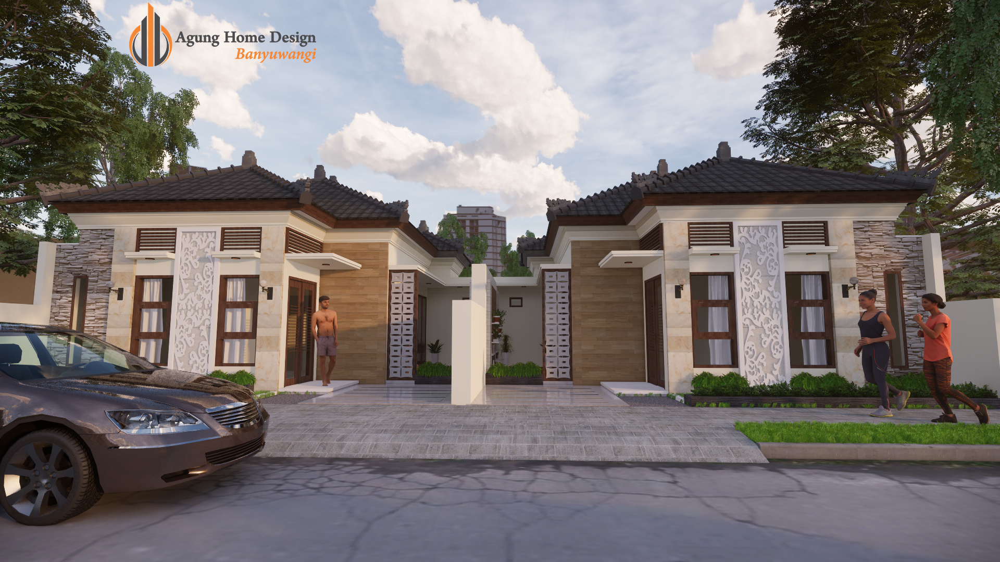
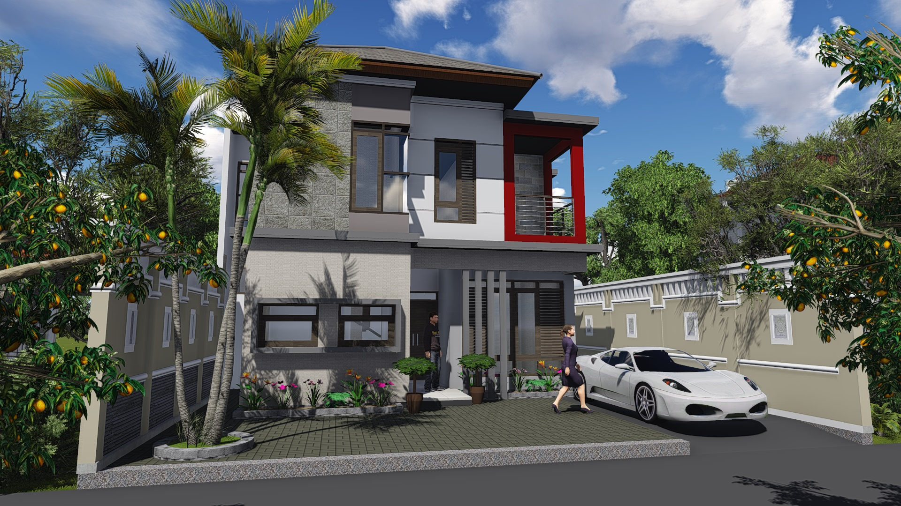

Hai Salam Kenal...!!!
Perkenalkan nama saya Agung Wahyu wibisono.
Saya sebagai designer Arsitektur dan juga mengajar murid Smk dalam Hal LKS (Lomba Kompetensi Siswa).
Saya mempunyai Keahlian dalam Mendesain Rumah dan desain grafis, berikut contoh Hasil Desain arsitektur yang
saya miliki :


